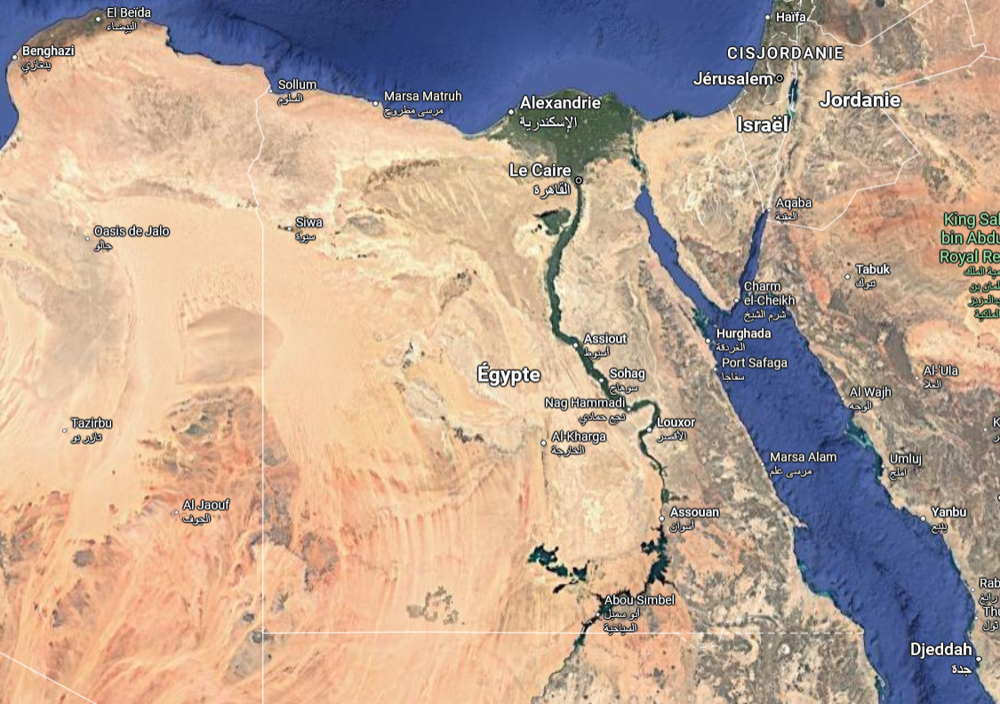
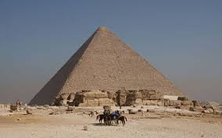
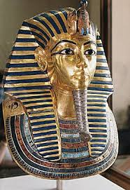
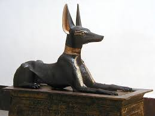
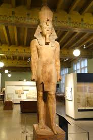
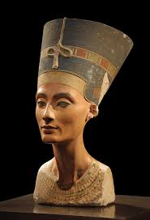
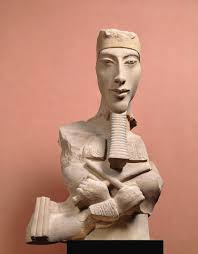
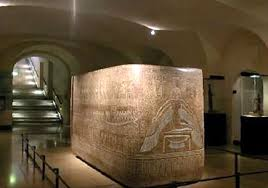
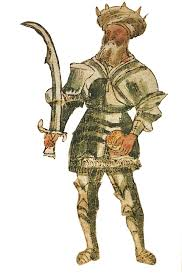

Carte de l'Égypte
L’Égypte est un pays situé entre l’Afrique du Nord et au Moyen-Orient, entre la Libye et Israël, et possède un territoire assez large, d’environ 1 million de km². Les égyptiens et égyptiennes y sont plus de 105 millions à y vivre. La langue officielle est l’arabe et la monnaie est la livre égyptienne.
La capitale du pays est Le Caire, et sa spécificité est que cette ville comprend aussi Gizeh, lieu où se trouvent des célèbres pyramides. Les autres grandes villes du pays, sont Alexandrie, Louxor, Karnak ou encore Suez.
Lieux
Découvrez les différents lieux mythiques du pays :
Alexandrie
Canal de Suez
Karnak
Vallée des Rois
Le Caire
Louxor
Le mont Sinaï
Abou Simbel
Mosquée Mohammed Ali
Nil
Histoire
L’Égypte est et a toujours été une des grandes puissances d’Afrique du Nord et du Moyen-Orient, notamment grâce au Nil qui passe dans le pays. C’est ici qu’une des première formes d’écritures est née : les hiéroglyphes. Les pharaons et les traces qu’ils ont laissés (pyramides, sphinx...) forgent aussi l’histoire de l’Égypte.
L’Égypte a ensuite été sous l’égide du Royaume-Uni, de 1882 à 1922, avant de prendre son indépendance.
Personnages
Découvrez les figures importantes dans l’histoire de notre pays :
Saladin / Akhenaton / Toutankhamon / Cléopâtre
Culture
L’Égypte est aussi un pays avec une culture spécifique, avec de grands bâtiments : Mosquée du Caire, Sphinx de Gizeh, Pyramides..., mais aussi de magnifiques œuvres historiques
Œuvres
Pyramide de Gizeh
Pyramide de Khéops
Masque funéraire Toutankhâmon
Statue d'Anubis
Statue de Toutankhâmon
La malédiction de Toutankhâmon (film + livre)
Le buste de Néfertiti
Le buste d'Akhenaton
Sarcophage égyptien Ramsès II (Louvre)
Le cimeterre de Saladin et son armure crocodile